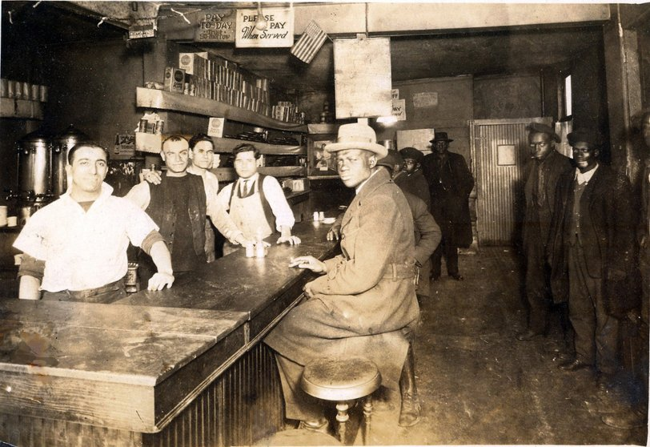
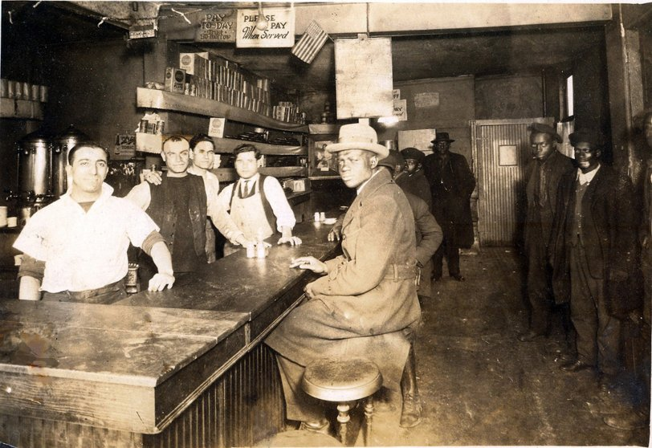

Introduction - The Hill District in the 1930s
From the 1930s to the 1950s, Pittsburgh's Hill District emerged as one of the most prosperous and influential Black communities in America. This vibrant neighborhood was a cultural crossroads where jazz flourished amidst the harsh realities of the Great Depression and racial segregation.
The Hill District, often referred to as "the crossroads of the world," became a central hub of African American life, home to a thriving business district, cultural venues, and social organizations. As the Great Depression swept across America, the Hill District maintained its cultural vitality, becoming an incubator for musical innovation and social resistance.
By 1930, the Black population in the Hill District had more than doubled since 1910, with approximately 50,000 Black residents. This demographic shift created a concentration of Black cultural, economic, and social power that would transform Pittsburgh's urban landscape.

Hill District street scene in the 1930s
Key Facts: Hill District in the 1930s
- By 1930, approximately 50,000 Black residents lived in the Hill District
- The neighborhood featured around 25 synagogues, reflecting its early Jewish heritage
- The streets were still cobblestone while the rest of the city had progressed to modern paving
- Despite economic hardships, the Hill District maintained thriving entertainment venues and businesses
- Only 1% of Lower Hill residents owned their homes in 1930
The Cultural Landscape
 

The Hill District's cultural vitality stood in stark contrast to the economic challenges of the Depression era. The neighborhood's street life, vibrant clubs, and community spaces created opportunities for creative expression and social connection, laying the groundwork for institutions like the Crawford Grill to emerge as critical spaces for Black cultural and economic life.
Listen to the Sounds of the Era
Listen to "Pittsburgh, PA: The Sounds of Pittsburgh Jazz | Places of Invention"
Setting the Stage: Prohibition Ends, A New Era Begins
The repeal of Prohibition in 1933 marked a pivotal moment for nightlife in Pittsburgh's Hill District. During the Prohibition era (1920-1933), speakeasies and underground establishments had flourished, creating a foundation for what would become legitimate entertainment venues in the post-Prohibition landscape.
As legal alcohol sales resumed, businesses like the Crawford Grill could emerge from the shadows, transforming from speakeasies into legitimate nightclubs. This transition coincided with the deepening of the Great Depression, creating a complex economic environment where entertainment venues became even more important as spaces of escape and community.
This period saw jazz becoming more fully integrated into the neighborhood's social and economic fabric, evolving from entertainment into a cultural force that helped sustain community resilience during hard times.

A speakeasy in Pittsburgh during the Prohibition era
1920-1933
Prohibition era creates underground network of speakeasies and illegal alcohol distribution in the Hill District
1929
Stock market crash initiates the Great Depression, severely affecting industrial cities like Pittsburgh
1933
Repeal of Prohibition allows for legal establishment of nightclubs and bars
1930s
Gus Greenlee establishes the first Crawford Grill in the Hill District
The Cultural Impact of Prohibition's End
The Transformation of Nightlife
The end of Prohibition created new opportunities for Black entrepreneurs to establish legitimate businesses, though they still operated within a system of segregation and limited economic opportunity. The transition from illegal speakeasies to licensed clubs reshaped the cultural landscape of urban Black communities across America, with Pittsburgh's Hill District exemplifying this transformation.
The Depression-era economic constraints meant that new technologies like jukeboxes, first commercially available in 1934, became ubiquitous in the 1930s as post-Prohibition bars, restaurants, and lounges sought cheaper alternatives to live music. This technological shift impacted the professional lives of musicians, creating both challenges and opportunities for live music venues like the Crawford Grill.
The cultural landscape of the Hill District after Prohibition was characterized by the dual forces of legitimization and continued struggle against economic and racial barriers. This dynamic environment created the conditions for spaces like the Crawford Grill to emerge not just as entertainment venues, but as critical sites of community building and cultural resistance.
Watch: Pittsburgh's Prohibition Era
Who Was Gus Greenlee?

William "Gus" Greenlee (1893-1952)
Key Facts: Gus Greenlee
- Born December 26, 1893 in Marion, North Carolina
- Migrated to Pittsburgh and initially worked in the steel industry
- Became a prominent numbers banker in Pittsburgh's Hill District
- Owner of the Pittsburgh Crawfords Negro League baseball team
- Built Greenlee Field, the first Black-owned baseball stadium in the country (1932-1938)
- Established the Negro National League and hosted its first meeting
- Died July 7, 1952 in Pittsburgh at age 58
William "Gus" Greenlee was much more than a club owner; he was a transformative figure in Pittsburgh's Black community who leveraged his business acumen and community connections to create institutions that elevated Black culture, entertainment, and sports during the Depression era.
Born in North Carolina in 1893, Greenlee migrated to Pittsburgh as a young man. After serving in World War I, he established himself as a businessman in the Hill District. While his wealth came substantially from the illegal numbers racket, Greenlee reinvested his earnings into legitimate businesses and community institutions.
By the 1930s, Greenlee had become one of the most influential figures in Pittsburgh's Black community. His portfolio included the Crawford Grill, the Pittsburgh Crawfords baseball team, and Greenlee Field, the only Black-owned baseball stadium in the country during its existence from 1932 to 1938.
Greenlee exemplified a complex type of Black entrepreneurship that emerged during this era—men who operated both within and outside the law, leveraging resources from illicit enterprises to build legitimate businesses and cultural institutions that served their communities in the face of segregation and economic marginalization.
Greenlee's Legacy Beyond Music


Greenlee's influence extended well beyond the entertainment world. By the end of Prohibition, he hosted the first meeting of the Negro National League (NNL), bringing together team owners and representatives from throughout the East and Midwest. His Pittsburgh Crawfords team became one of the most dominant in Negro League baseball, featuring stars like Satchel Paige and Josh Gibson.
When Greenlee opened the Crawford Grill in the 1930s, he created a space that would become central to Pittsburgh's jazz scene and Black social life. The club was more than just a business venture—it was part of Greenlee's broader vision for creating spaces of Black autonomy and cultural expression in a segregated city.
Learn More About Gus Greenlee
Negro Leagues 101: William "Gus" Greenlee
The Crawford Grill No. 1: A New Kind of Space
The Crawford Grill No. 1 opened in the 1930s on the corner of Townsend Street and Wylie Avenue in the Lower Hill District. This pioneering establishment represented a new kind of cultural space in Pittsburgh—one owned and operated by Black entrepreneurs that served as both an entertainment venue and a community gathering place.
The original Crawford Grill occupied the first floor of a building at 1401 Wylie Avenue, with the second floor housing the Paramount Club—a members-only after-hours social club that attracted patrons from across the city. The physical space of the Crawford Grill embodied the cultural aspirations of Pittsburgh's Black community during the Depression era.
The Crawford Grill's architecture and interior design created an atmosphere of sophistication and elegance, providing patrons with an experience that challenged the demeaning stereotypes of Black culture prevalent in mainstream society. From its stylish decor to its reputation for excellent service, the Crawford Grill projected an image of Black excellence and autonomy in a society that routinely denied Black people's humanity and dignity.

Interior of the Crawford Grill showing the elegant atmosphere
Crawford Grill No. 1: At a Glance
- Location: 1401 Wylie Avenue, Pittsburgh
- Opened: 1930s
- Closed: 1951
- Owner: William "Gus" Greenlee
- Manager in early years: Frank Sutton
- Featured live music and recorded music on jukeboxes
- First floor: Public restaurant and club
- Second floor: The Paramount Club (members-only after-hours social club)
Building a Cultural Institution
The Crawford Grill quickly established itself as more than just a nightclub—it became a cultural institution central to Pittsburgh's Black community. As historian Rob Ruck noted, establishments like the Crawford Grill were "essential for establishing future jazz clubs that provided local and touring musicians places for organizing, networking, training, and performing as well as providing Pittsburgh audiences sites for interracial socializing around music."


The dearth of entertainment at the Grill in the early 1930s could be the result of Greenlee's focus on sports as well as manager Frank Sutton's preference for recorded music. As technologies like jukeboxes became more prevalent, venues had to navigate the balance between recorded and live music, adapting to the economic constraints of the Depression era.
Despite these challenges, the Crawford Grill established a tradition of musical excellence that would be expanded with the opening of Crawford Grill No. 2 in later years. The original Crawford Grill laid the groundwork for what would become a legendary jazz venue, creating a template for Black-owned entertainment spaces that combined business success with cultural significance and community service.
Exploring the Crawford Grill's Space
Economic Independence: Black Entrepreneurship

Black-owned businesses in Pittsburgh's Hill District, 1930s
Black Business in the Great Depression
- The Great Depression devastated Black businesses nationwide, with many facing closure
- In Pittsburgh's Hill District, some entrepreneurs found alternative revenue streams through illegal enterprises like numbers running
- These illicit funds were often reinvested in legitimate businesses that served the community
- Black-owned venues created jobs during a time of severe unemployment
- The economic ecosystem of the Hill District circulated money within the community
The Crawford Grill represented a powerful example of Black entrepreneurship during an era when economic autonomy was particularly difficult for Black Americans to achieve. Opened during the Great Depression, the club demonstrated the resilience and ingenuity of Black business owners who created successful enterprises despite systemic barriers to capital, credit, and market access.
For Gus Greenlee and other Black entrepreneurs in Pittsburgh, ownership of businesses like the Crawford Grill provided economic independence from white-controlled employment markets that routinely discriminated against Black workers. These businesses created jobs for Black workers, from musicians and bartenders to waitstaff and cooks, generating economic opportunity within the community.
The economic significance of the Crawford Grill extended beyond its direct employment. As a venue that attracted patrons from across the city, it brought revenue into the Hill District that might otherwise have been spent elsewhere. This economic multiplier effect strengthened the neighborhood's business district and contributed to its development as a center of Black economic power.
Moreover, Greenlee's investment in the Crawford Grill demonstrated a form of community reinvestment, where profits generated within the neighborhood were recycled into new businesses that served local needs and enhanced the area's cultural life. This model of economic development provided a blueprint for sustainable community growth in a segregated city.
The Broader Network of Black Enterprise
The Crawford Grill was part of a broader ecosystem of Black-owned businesses in the Hill District that collectively provided services, products, and entertainment to residents. From barbershops and beauty salons to restaurants and theaters, these enterprises formed an economic network that helped sustain the community during the challenges of the Depression.
Black entrepreneurs like William "Woogie" Harris, Gus Greenlee's sometimes partner in the numbers business, also invested in real estate and other legitimate businesses. The Hill District became a showcase for Black economic achievement, demonstrating the community's capacity for business success when barriers to opportunity were overcome.
The economic independence fostered by businesses like the Crawford Grill had political implications as well. By controlling their own economic resources, Black business owners gained greater ability to advocate for community interests, support political candidates, and resist discriminatory policies. Economic power translated into community influence in ways that challenged the racial hierarchy of Depression-era Pittsburgh.
Musical Labor: A Stage for Artists
The Crawford Grill served as a crucial venue for Black musicians, offering performance opportunities and income during the economic hardship of the Great Depression. For jazz artists, clubs like the Crawford Grill provided not only employment but also creative spaces where they could develop their craft, collaborate with other musicians, and connect with audiences.
In an era when technological changes like the jukebox threatened live music, the Crawford Grill's commitment to featuring performances helped sustain the careers of local and touring musicians. The work of performing was both economically necessary and artistically fulfilling, allowing musicians to develop Pittsburgh's distinctive jazz sound.
Musicians at the Crawford Grill were workers whose labor produced cultural value that enhanced the club's reputation and commercial success. At the same time, they were artists whose creative expression gave voice to the experiences, struggles, and aspirations of Pittsburgh's Black community during a time of economic and social upheaval.

Musician performing at the Crawford Grill
The Working Musician's Reality
- The Depression drastically reduced income for many musicians
- New technologies like jukeboxes (first commercially available in 1934) threatened live music jobs
- Black musicians faced racial discrimination in many venues
- Clubs like the Crawford Grill provided reliable employment
- Musicians often played multiple venues in a single night to make ends meet
- The American Federation of Musicians' Black local chapter advocated for fair treatment
The Pittsburgh Sound and Its Creators


Pittsburgh developed a distinctive jazz tradition that drew from the city's industrial character and diverse immigrant communities. Musicians who performed at the Crawford Grill contributed to this unique sound, which later influenced national jazz trends through artists like Billy Eckstine, Mary Lou Williams, Erroll Garner, and Art Blakey who began their careers in Hill District venues.
The Crawford Grill functioned as an informal conservatory where younger musicians could learn from established artists, developing their skills through mentorship and jam sessions. This educational function was particularly important for Black musicians who were excluded from many formal music education opportunities due to segregation.
Musicians' labor at the Crawford Grill produced more than just entertainment—it created cultural capital that enhanced the prestige of Pittsburgh's Black community and challenged racist stereotypes. The excellence of these performers demonstrated Black artistic achievement in ways that subtly contested the racial hierarchies of American society during the Depression era.
The Legacy of Pittsburgh Jazz
Spatial Justice: Claiming Space in a Segregated City
The Crawford Grill represented a powerful claim to urban space in a city where racism and segregation severely limited Black access to public venues and commercial property. By establishing a Black-owned and operated nightclub in the heart of the Hill District, Gus Greenlee created a space of Black autonomy and self-determination that challenged the spatial logics of racial segregation.
During the 1930s, segregation restricted Black Pittsburghers' access to many downtown venues and neighborhoods. The creation of vibrant cultural spaces like the Crawford Grill in the Hill District was thus not merely a business decision but a political act that asserted Black people's right to occupy, own, and shape urban space on their own terms.
The physical location of the Crawford Grill on Wylie Avenue—the main commercial thoroughfare of the Hill District—gave it prominence in the neighborhood's landscape. Its visibility made it a symbol of Black achievement and creativity in a city that often rendered Black people invisible in official narratives and public representations.
Wylie Avenue in Pittsburgh's Hill District
Spatial Inequalities in 1930s Pittsburgh
- Black residents were restricted to specific neighborhoods through formal and informal segregation
- Only 1% of Lower Hill residents owned their homes in 1930
- Urban infrastructure like street paving was neglected in Black neighborhoods
- Black businesses faced barriers to securing commercial property outside designated areas
- Black patrons were unwelcome or relegated to inferior accommodations in many downtown venues
Creating Black Geographies
The Crawford Grill was part of what scholars call "Black geographies"—spaces created and sustained by Black communities that offered alternatives to white-dominated urban landscapes. These Black-created spaces were sites of both refuge from discrimination and resistance to racist spatial practices.


Inside the Crawford Grill, the spatial arrangement reflected both business considerations and cultural values. The establishment's two floors—a public restaurant and club on the first floor and the members-only Paramount Club on the second floor—created a graduated social space that accommodated different needs and preferences while maintaining the club's overall character.
The interracial mingling that occurred at the Crawford Grill challenged the spatial segregation that characterized much of Pittsburgh's social landscape. By bringing together Black and white patrons in a Black-owned space, the club inverted the usual power dynamics of interracial interactions in public venues, where white ownership and preferences typically dominated.
The Crawford Grill's claim to urban space took on additional significance in the context of Pittsburgh's changing urban landscape. As the city began to consider urban renewal projects that would eventually displace many Hill District residents, spaces like the Crawford Grill represented the community's rightful place in the city—a claim that would be contested in later decades as urban planners and developers sought to reshape the neighborhood.
The "Numbers Racket": Fueling the Scene
The numbers racket provided funding for legitimate businesses in the Hill District
The Numbers Game Explained
- The "numbers" was an illegal lottery popular in urban Black communities
- Players bet pennies, nickels, and dimes on a three-digit number
- Winning numbers were often derived from published financial figures like stock market reports
- Neighborhood "runners" collected bets and distributed winnings
- Odds of winning were typically 1 in 1,000, with payouts of 600 to 1
- The game generated substantial profits for "bankers" who managed the operations
The Crawford Grill and much of Pittsburgh's jazz scene during the Depression era were financially sustained by proceeds from the "numbers racket"—an illegal lottery that flourished in urban Black communities across America. Gus Greenlee, owner of the Crawford Grill, was one of Pittsburgh's most successful numbers bankers, using profits from this illicit enterprise to fund legitimate businesses that served the community.
In the context of the Great Depression and systemic discrimination that limited Black access to traditional business capital, the numbers racket provided an alternative funding source for Black entrepreneurs. The cash flow from numbers operations allowed figures like Greenlee to invest in entertainment venues, sports teams, and other businesses that created jobs and services for the community.
While illegal, the numbers racket had a complex relationship with the community it served. Many Hill District residents saw operators like Greenlee not as criminals but as community benefactors who provided economic opportunities and reinvested in the neighborhood. The numbers game also created a financial infrastructure that circulated money within the Black community at a time when many banks refused to serve Black customers or businesses.
Numbers bankers often enjoyed significant social status and political influence in their communities. Greenlee's position as a successful numbers operator gave him connections throughout Pittsburgh's political and business worlds, relationships he could leverage to protect his legitimate enterprises like the Crawford Grill and advocate for community interests.
The Economic Ecosystem of the Numbers
The numbers racket created an economic ecosystem that supported numerous community institutions beyond just nightclubs. Churches, fraternal organizations, civil rights groups, and charitable endeavors all benefited from donations from successful numbers operators, who often sought to legitimize their wealth and status through philanthropy.
The numbers game itself was deeply embedded in community life and culture. Players developed elaborate systems for selecting numbers, often based on dreams, signs, or personal events. Policy shops where bets were placed became social centers where neighborhood residents gathered to exchange news and information.
The relationship between illegal numbers operations and legitimate businesses like the Crawford Grill illustrates the complex survival strategies developed by Black communities in response to economic exclusion. When denied access to conventional business opportunities, entrepreneurs created alternative economic systems that, while operating outside the law, provided essential resources for community development.


The eventual legalization of gambling through state lotteries in later decades would appropriate the numbers game model without benefiting the communities that had developed it. This transition exemplifies how Black cultural and economic innovations were often criminalized when controlled by Black entrepreneurs but legitimized and profited from when taken over by white-dominated institutions.
Challenges and Complexities
The Crawford Grill's story, while celebrated for its cultural significance and community impact, also contained tensions and contradictions that reflect the complex realities of Black life in Depression-era Pittsburgh. These challenges included the moral ambiguities of numbers-funded enterprises, internal class divisions within the Black community, and the precarious nature of Black businesses in a racist economic system.
The club's financial dependence on proceeds from the illegal numbers racket created complicated ethical questions. While the numbers game provided an alternative funding source in a financial system that excluded Black entrepreneurs, it also extracted resources from working-class and poor community members who could ill afford to lose their bets, especially during the economic hardship of the Depression.
The Crawford Grill's sophisticated atmosphere and relatively high prices meant that it primarily served a middle-class clientele that could afford its entertainment offerings. This created potential class tensions within the Black community, as venues like the Crawford Grill catered to the more affluent while excluding poorer residents who lacked the means to participate in this aspect of neighborhood cultural life.

The challenges of Depression-era Pittsburgh affected the Hill District
Competing Tensions
- Moral ambiguity of numbers-funded businesses that both extracted from and reinvested in the community
- Class divisions between the Black elite who frequented clubs and working-class residents who couldn't afford them
- Tensions between jazz as authentic cultural expression and as commodified entertainment
- The risks of Black businesses dependent on white patronage and political protection
- The precarious balance between legitimate businesses and illegal operations
- The double-edged nature of interracial socialization that both challenged and reinforced racial hierarchies
Navigating a Hostile System
Black business owners like Greenlee operated in a system where their success depended on navigating complex relationships with white political and economic power structures. The Crawford Grill's operation required maintaining connections with local officials, police, and politicians who could either protect or threaten the club's existence depending on shifting political winds.
The interracial socialization that occurred at the Crawford Grill, while breaking down some racial barriers, also contained ambiguities. White patrons who enjoyed Black cultural productions at the club did not necessarily support broader movements for racial justice and equality outside its walls. The act of white people consuming Black culture in Black spaces could both challenge and reinforce racial hierarchies in complex ways.
For musicians, the Crawford Grill provided both opportunities and constraints. While the club offered performance spaces and income, musicians also had to navigate the commercial demands of entertaining paying customers, which could sometimes limit their artistic freedom and innovation. The balance between artistic expression and commercial viability created tensions that affected how jazz developed as both an art form and a product.
The Great Depression itself presented enormous challenges to maintaining businesses like the Crawford Grill. Economic hardship reduced disposable income for entertainment, making it difficult to sustain cultural institutions even as they became more important as spaces of community resilience and psychological relief from the stresses of economic crisis.
These complexities do not diminish the Crawford Grill's significance but rather highlight the difficult terrain that Black cultural institutions had to navigate during this period. The club's ability to survive and thrive despite these challenges testifies to the resourcefulness of its owners and the community that supported it.
Watch: Uncovering Pittsburgh's Jazz History
Legacy: "The Burning Sound"
The Crawford Grill's legacy extends far beyond its years of operation, continuing to influence our understanding of Black cultural resistance, entrepreneurship, and community building during the Great Depression. The "burning sound" of jazz that emanated from its stage represented not just artistic expression but a powerful assertion of Black humanity and dignity in the face of economic hardship and racial oppression.
This pioneering venue established a template for Black-owned cultural spaces that would flourish in later decades. The Crawford Grill demonstrated that such spaces could serve multiple functions simultaneously: providing entertainment, creating economic opportunity, fostering community connections, and claiming urban space for Black cultural expression.
The Crawford Grill's story helps us understand how Black communities responded to the Great Depression through cultural innovation and economic adaptation. While facing disproportionate hardship during the economic crisis, Black entrepreneurs and artists created institutions that not only provided survival strategies but also celebrated Black creativity and resilience.
The Crawford Grill's cultural legacy continues to influence Pittsburgh
The Crawford Grill's Enduring Impact
- Established a model for Black cultural venues that combined entertainment with community building
- Contributed to Pittsburgh's reputation as a major jazz center
- Demonstrated the potential of Black entrepreneurship despite systemic barriers
- Created a space where racial boundaries could be challenged through musical exchange
- Inspired subsequent generations of cultural institutions in the Hill District
- Became a symbol of the neighborhood's cultural significance and resilience
Remembering and Reclaiming
The eventual closure of the original Crawford Grill in 1951 marked the end of its physical operation but not its cultural significance. The venue lives on in community memory, historical documentation, and ongoing efforts to preserve and honor the Hill District's jazz heritage. These commemorative practices ensure that the lessons and inspirations of the Crawford Grill continue to inform contemporary struggles for cultural autonomy and economic justice.


Contemporary jazz musicians, community organizers, and cultural workers continue to draw inspiration from the Crawford Grill's example. The club's history demonstrates the power of cultural spaces to nurture community resilience, challenge oppressive systems, and create alternative economic models that center community needs and aspirations.
The "burning sound" that gives this exhibit its title refers not only to the hot jazz played at the Crawford Grill but also to the fiery spirit of determination and creativity that animated the venue and the community it served. This sound continues to echo through Pittsburgh's cultural landscape, reminding us of the power of music and community to transform difficult circumstances into opportunities for expression, connection, and change.
As we face contemporary economic challenges and ongoing struggles for racial justice, the Crawford Grill offers valuable lessons about the role of cultural spaces in sustaining communities and fostering resistance. Its legacy invites us to consider how we might create and support venues that, like the Crawford Grill, serve not just as places of entertainment but as engines of community empowerment and cultural preservation.
Social Hub: Where Pittsburgh Met
Diverse patrons enjoying music at the Crawford Grill
The Crawford Grill's Diverse Clientele
The Crawford Grill functioned as a vital social hub where Pittsburgh's diverse communities came together around music and entertainment. In a city marked by racial segregation and class divisions, the club created a space where these boundaries could be temporarily transcended, allowing for cross-cultural exchange and interracial socialization that was rare in Depression-era America.
On weekends, Pittsburgh's elite white clientele, including figures like Art Rooney (owner of the Pittsburgh Steelers) and department store owner Edgar Kaufmann, would visit the Crawford Grill to enjoy its music and atmosphere. These patrons mixed with the club's primarily Black clientele, creating an unusual social environment where racial barriers were lessened, if not eliminated.
For the Hill District's residents, the Crawford Grill provided a community gathering place where they could socialize, celebrate, and temporarily escape the hardships of Depression-era life. The club hosted community events, birthday parties, and celebrations that strengthened neighborhood bonds and fostered a sense of collective identity.
Beyond entertainment, the social connections formed at the Crawford Grill sometimes led to business partnerships, political alliances, and creative collaborations that benefited the broader community. As a nexus of social interaction, the club facilitated relationships that extended beyond its walls into various aspects of Pittsburgh's civic and cultural life.
Creating Community Through Shared Experience
The social atmosphere of the Crawford Grill was carefully cultivated to balance sophistication with accessibility, creating a space where patrons from different backgrounds could feel comfortable. The club's reputation for excellent service, quality entertainment, and a welcoming environment made it a destination not just for Hill District residents but for music lovers from across the city and beyond.
The social experience of the Crawford Grill was inseparable from its musical offerings. Jazz created a shared language that transcended social differences, allowing patrons to connect through their appreciation for the music's emotional power and artistic brilliance. These shared aesthetic experiences fostered a sense of community among the club's diverse clientele.
For Black patrons in particular, the Crawford Grill offered a space of dignity and respect at a time when they faced discrimination in many other public venues. The club's Black ownership and management ensured that it remained a space where the community's needs and preferences were centered, even as it welcomed white patrons.
The social significance of the Crawford Grill extended to its role in Pittsburgh's nightlife ecosystem. As part of a network of clubs, restaurants, and entertainment venues in the Hill District, it contributed to the neighborhood's reputation as a vibrant cultural center where people could experience the best of Black music, food, and social life.
Pittsburgh's Crawford Grill: A Social Institution